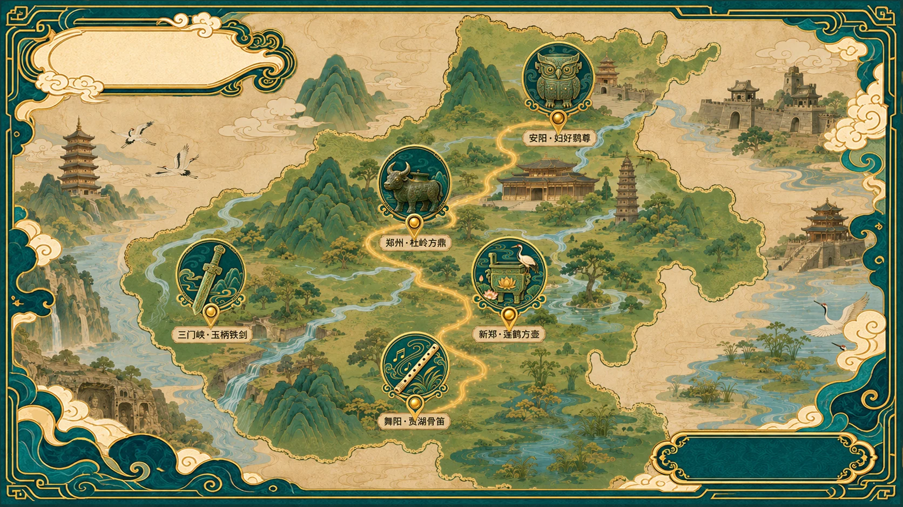

ROUTE 01
舞阳
HENAN RELIC JOURNEY

河南文物 IP 互动之旅
CIVILIZATION ARCHIVE
五张图鉴已按年代由早到晚排列，每完成一次“文明挑战”，就会点亮一枚文明印记。
MY HENAN MEMORY
把已经点亮的文物角色、城市足迹和文明印记收进一张横向卡片，保存为本次河南之旅的数字纪念。
VISIT HENAN · RELIC ROUTES
先认识文物的出土城市，再选择适合线下到访的博物馆。开放与预约信息请以场馆当天公告为准。
CULTURAL CREATIVE LAB
从角色、表情与卡牌，到盲盒、配饰和城市伴手礼。
CRAFT & MOTIF
放大观察六组核心细节：莲冠、鸮纹、牛首、玉柄、骨笛与羽翼。它们不是额外装饰，而是每个角色最重要的身份识别。
RELIC CHARACTER CARDS
五张卡面组成完整收藏序列，保留角色编号、中文名、英文名与性格关键词。
BLIND BOX SYSTEM
包装延续墨青、玉绿、暖象牙与古金四色体系。正面突出角色与文物名称，侧面可继续延展城市、出土地和互动二维码。
FULL DESIGN BOARD
保留原始展板浏览，可上下滚动查看角色、表情、卡牌、衍生品与潮玩方案。